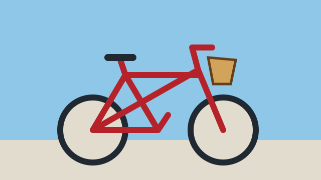

Wrap one image, optionally inside a picture or link. The component adds a “View alt text” button only when the image has nonempty alt text. Opening the dialog makes the rest of the page inert until you close it. Use the Close button or Escape; keyboard focus returns to the opener.
Start with an image
The button opens a command-driven dialog. The component never replaces or clones the image.
<img-alt-overlay>
<img src="bicycle.svg"
width="640" height="360"
alt="A red bicycle beside a blue wall, with a basket on its handlebars.">
</img-alt-overlay>
Translate the controls
button-label, dialog-label, and
close-label replace all generated wording.
They’re plain text; lang and
dir inherit normally.
<img-alt-overlay lang="fr"
button-label="Voir le texte alternatif"
dialog-label="Description de l’image"
close-label="Fermer">
<img src="bicycle.svg" width="640" height="360"
alt="Un vélo rouge devant un mur bleu, avec un panier sur le guidon.">
</img-alt-overlay><img-alt-overlay lang="ar" dir="rtl"
button-label="عرض النص البديل"
dialog-label="وصف الصورة"
close-label="إغلاق">
<img src="bicycle.svg" width="640" height="360"
alt="دراجة حمراء أمام جدار أزرق، وسلة على المقود.">
</img-alt-overlay>Keep responsive images and links
Put an image link inside the wrapper, not around it. The generated button remains outside the link. Keep captions outside the image wrapper.
<figure>
<img-alt-overlay>
<a href="bicycle.svg">
<picture>
<source media="(min-width: 40em)"
srcset="bicycle.svg">
<img src="bicycle.svg" width="640"
height="360" alt="View the red bicycle illustration.">
</picture>
</a>
</img-alt-overlay>
<figcaption>A neighborhood bicycle.</figcaption>
</figure>
Theme the overlay
The optional stylesheet uses logical positioning and stable light-DOM hooks. Without it, the same native dialog works with browser-default presentation.
img-alt-overlay.bright {
--img-alt-button-background: #fff;
--img-alt-button-color: #132d46;
--img-alt-dialog-background: #f0f7ff;
--img-alt-dialog-color: #132d46;
}Leave decorative images alone
Empty alt text is intentional for decorative images, so no button appears. Missing alt text also produces no button, but authors still need to supply an appropriate alternative or mark the image decorative.
<img-alt-overlay>
<img src="bicycle.svg" width="640"
height="360" alt="">
</img-alt-overlay>Loading, failure, and long descriptions
Nothing hides the image while JavaScript loads. Disable JavaScript or block the module request to check the native fallback. The component doesn’t fetch images, change loading hints, or depend on image load. Long descriptions wrap and scroll inside the dialog.
<img-alt-overlay>
<img src="missing-image.svg" width="640"
height="360"
alt="A red bicycle with a basket. The front wheel points slightly to the left; a blue wall fills the background.">
</img-alt-overlay>
Invalid configuration emits
img-alt-overlay:error and leaves authored
markup alone. See the
versioned CDN example
for class-only imports; it needs the package to be published
first.